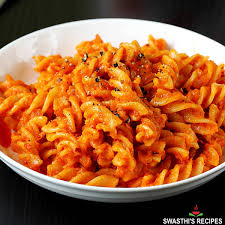

This pasta recipe is simple, tasty, and perfect for beginners. It is a great option for students who want a filling meal.

Preparation Time: 10 minutes
Difficulty Level: Easy
Best For: Lunch / Evening Meal